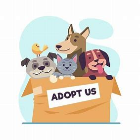

Pet Adoption Application
For this project, I created a model application that will display pictures and information about the list of pets that can be adopted. Within the application, there is a homepage that has a list of the pets, each one includes a picture of the pet and general information. By clicking on the box, it will lead to a separate page that contains detailed information about the pet, such as name, age, breed, and their personality. With this application, I learned how to use the coding language, Swift, how to manage the application, and analyze data. For this project, I wish I had a better understanding with the use of json files, and be able to make an user interaction page, that will allow the user to either enter more pets into the list, or they can claim to adopt the pet online. I also wish I have a deeper skill with swift to actually test out my application using iPhone or iPad instead of just having the application on a built-in model.
Finance Database Application
With this project, I created a database to keep track of user transactions. Within the database application, I connected MySQL with python to build a basic application to ask for information. It will ask for the user’s ID and password, if the password is incorrect the user will not be able to access the database that contains the information stored with the given user ID. With successful access to the user ID, it will ask the user what they would like to do with the database, they can check the account information, make transactions, create new accounts, and change their email address. I learned how to use basic SQL functions to create the database and store information, how to connect python with MySQL to make a basic user interface, and project planning methods. Something I wish I have done better is to create an UI application that will actually have user interaction by clicking on the options instead of just displaying the information in the terminal.
Develop[Her]
Develop[Her] is the first organization that is dedicated to women in computing at Mizzou. In the club, we hold weekly meetings that contain several activities, such as beginner friendly tech tutorials, invite guest speakers, and make connections with peers. I joined the club in the fall of 2023, currently holding the position of Vice President for the club starting December, 2024 to present. As the Vice President of the club, my main role is to assist the President, recruit new members for the club, and maintain the organization status with the university. My major accomplishment is to connect with professors to recruit new members at the beginning of the semester and conduct several speeches to talk about the club, what we do, and events we have throughout the year.